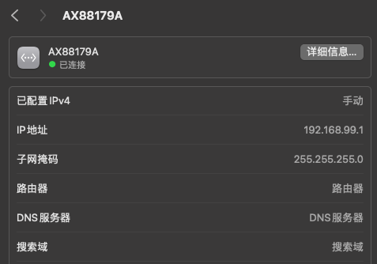
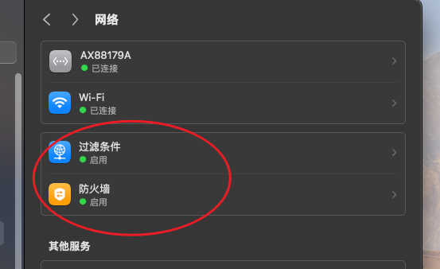
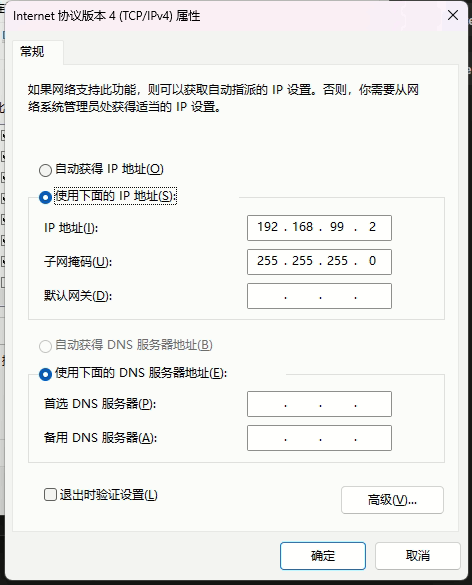
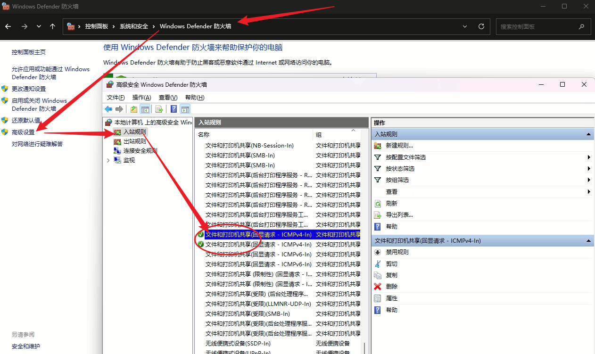
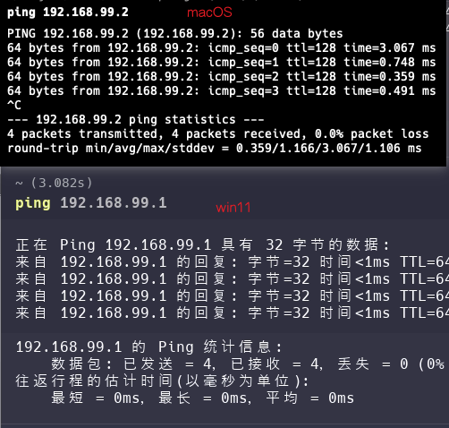

2025-05-28
macOS网线直连PC-Win11
修改于: 2025-05-28背景, 拿了台小主机准备替换掉公司的云桌面 (且保留以前的云桌面)
此前一直在公司用的 macOS 访问的云桌面, 现在多了一个小主机, 就换成了从小主机访问云桌面, macOS保留, 计划从 macOS 网线直连到 小主机上.
直连配置
首先找到一根网线连接 macOS 和小主机
注解
以前直连主机需要 交叉线, 现在的网卡都支持自动交叉, 所以就不用关注这一点了
在 macOS 跟 小主机上分别配置静态IP地址, 以实现逻辑上网络访问
以 192.168.99/24 为例
macOS 上的配置

同时需要注意 macOS 的防火墙设置 (笔者就是因为防火墙的问题, 一直以为设备网卡不支持自动翻转交叉, 以至于差点斥资买交叉线去了)

win11 小主机上的配置

注意要ping通需要开启打印机的icmp响应

然后在两台机器上应该就可以互相ping通了.

软件实现远程访问
原计划是用windows的远程桌面, 结果小主机上是家庭版, 没有远程桌面, 搜了下配置又很麻烦, 简单试了几种方法都不行, 故放弃.
然后找到了一个 AnyDesk 的远程桌面软件, 局域网内不需要付费, 可以直接输入ip连接.
下载地址: https://anydesk.com.cn/